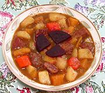

|
ScouseEngland - Liverpool - Scouse | ||||
| Makes: Effort: Sched: DoAhead: |
2-3/4 quart *** 3-1/2 hrs Best |
Scouse is so deeply associated with the seaport of Liverpool, the local accented English is called "Scouse". The name, originally "Lobscouse", is of Baltic origin (see History). | |||
| This recipe is slightly modernized, based mainly (but not entirely) on that of the Liverpool Football Club's Boot Room Sports Café. For strict "authenticity" see Comments. For Norwegian and Danish versions see Lapskaus / Labskovs, and for Wales see Cawl / Lobsgows. | |||||
|
|
1-1/2 ------ 1 6 8 1 ------ 1/4 1/2 2/3 2 2 2 5 ------ ar ar ------ |
# --- # oz oz # --- c T t c c --- --- |
Beef (1) -- Roots Onions Carrots Rutabaga Potatoes (2) ------- Olive Oil Salt Pepper Bitter Ale (3) Thyme sprig Bay Leaf Stock, Beef (4) -- Serve with Pickled Beets (5) Pickled Cabbage (5) ---------------- |
Prep - (40 min)
|